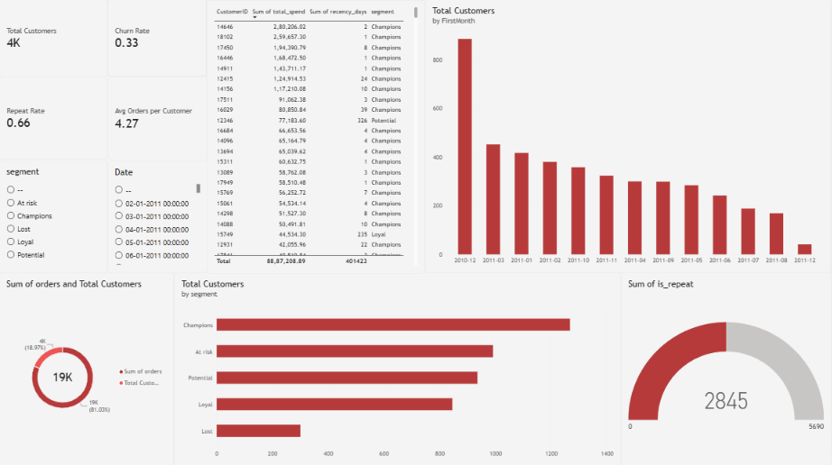
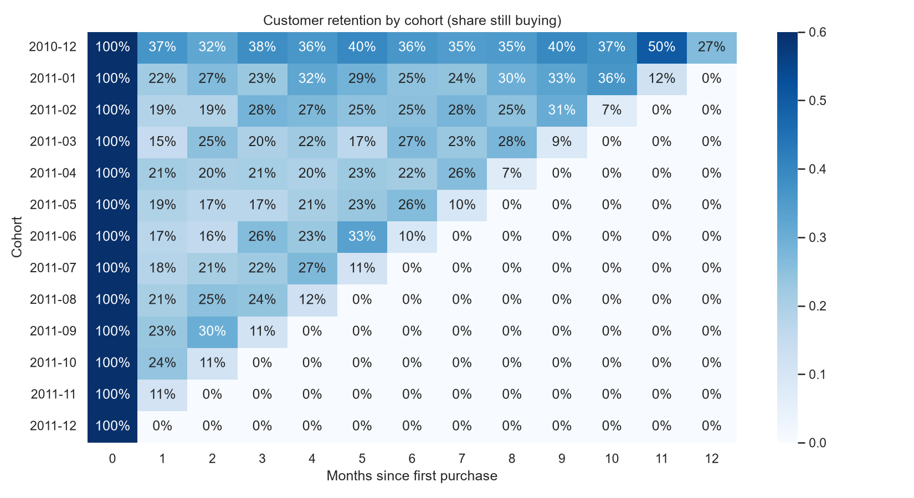
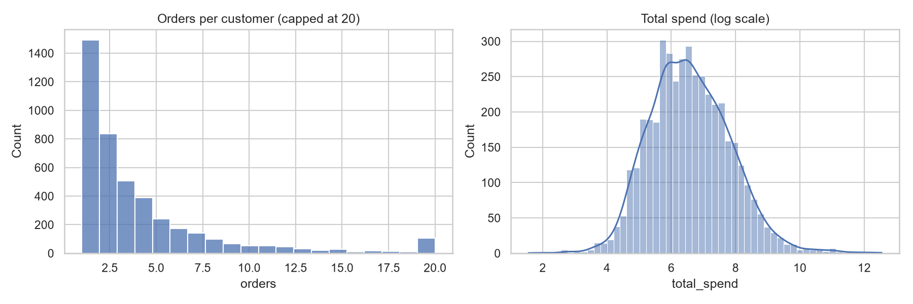
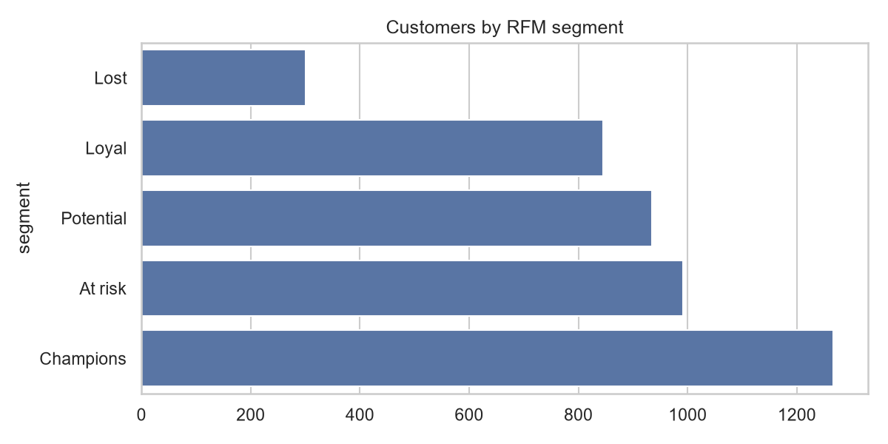
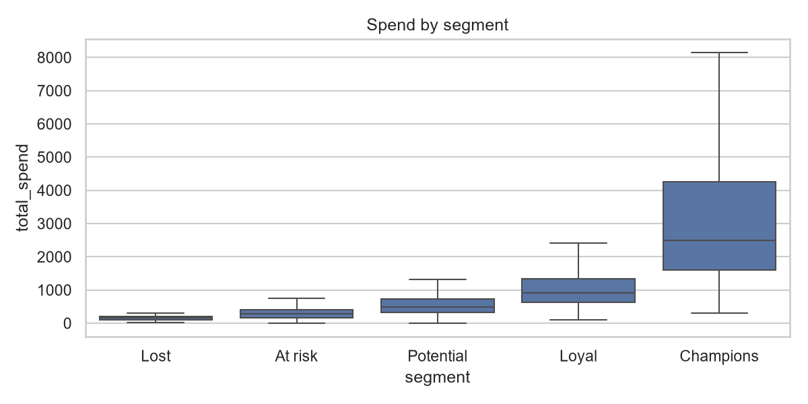

Power BI dashboard
Customer counts, repeat rate, churn, RFM segments and new customers by month, with slicers for segment and date.

Retention by cohort
Each row is the group of customers who first bought in that month. Each column shows the share of them still buying in the months that followed.

Customer behaviour
Spending is right-skewed: most customers spend a little and a small group spends a lot. Customers are grouped into RFM segments by recency, frequency and monetary value.



Findings and recommendations
Generated from the notebook results.
- Findings load from kpis.json once the notebook has been run.
Technologies used
- Python
- Pandas
- NumPy
- Matplotlib
- Seaborn
- SQL (SQLite)
- Power BI
- DAX
- Jupyter Notebook